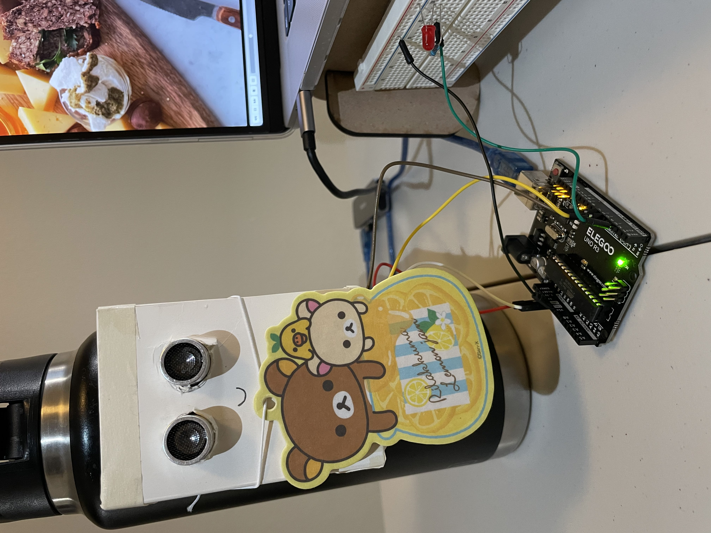
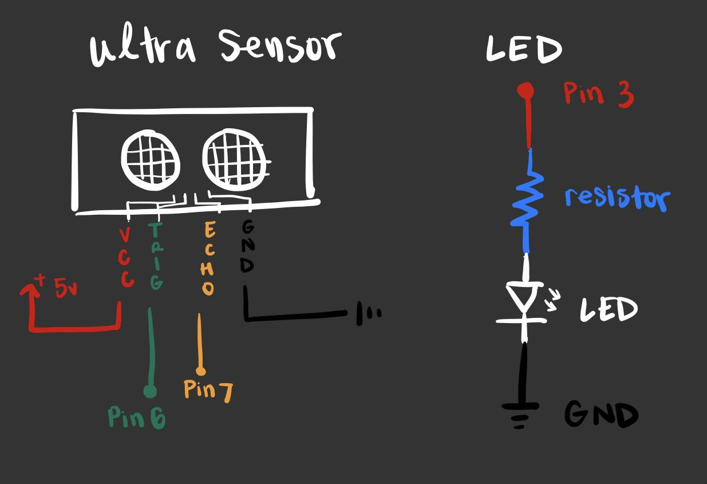
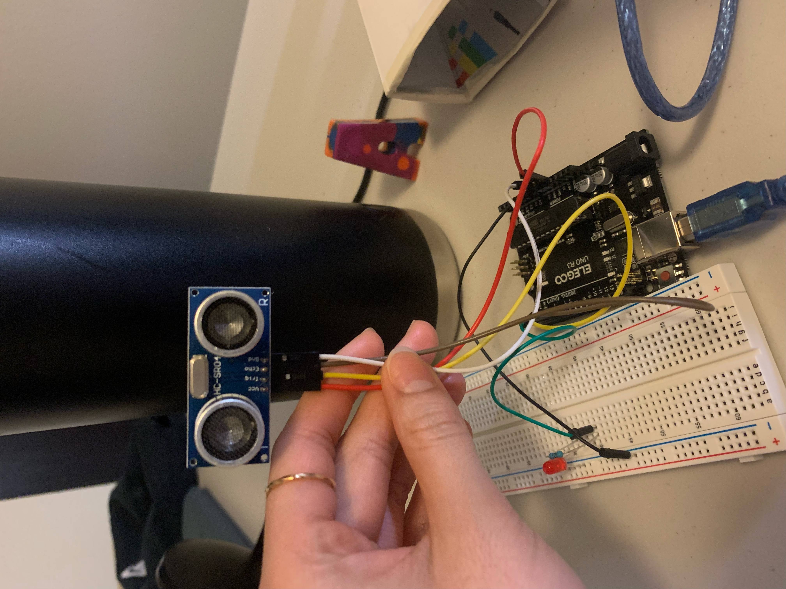
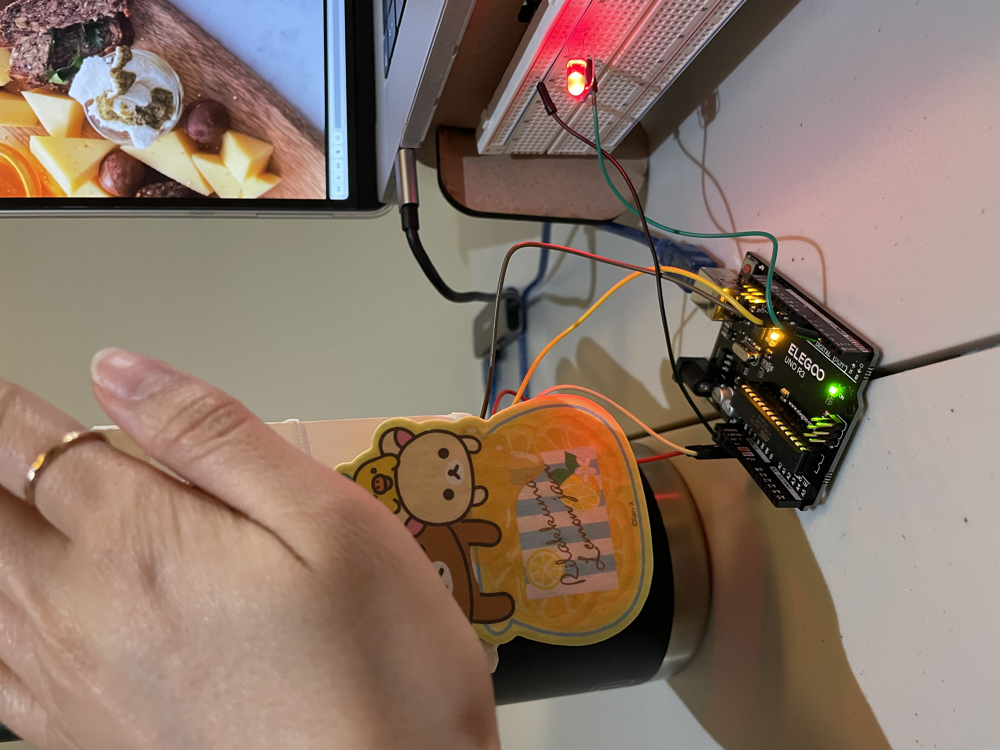

Concept: For my final project, I was really interested in using hand gestures and motions to control parts of the web, but for on lower scope, more precisely to play or pause a video. Technical Implementation:
  I had to download python and import pyautogui and pyserial which is similar to java and p5. The code below is from BalaAppu listed in the website in the first few lines. What this code does is allows for serial communication where the arduino and hotkeys can communicate and respond to one another. Specifically I was interested in the play/pause feature which I added myself. These are totally customizable but just a few to choose from. In order to run and play a video, I had to install VLC player as a platform for this communication to occur. At first I ran into the problem where the hotkey was incorrect for the VLC player, but I checked the keys and changed them accordingly. The incoming data at the bottom clears the data.
# gesture control python program for controlling certain functions in windows pc
# Code by BalaAppu
# Website: www.electronicshub.org
import serial # add Serial library for serial communication
import pyautogui # add pyautogui library for programmatically controlling the mouse and keyboard.
Arduino_Serial = serial.Serial('/dev/cu.usbmodem143401',9600) # Initialize serial and Create Serial port object called Arduino_Serial
while 1:
incoming_data = str (Arduino_Serial.readline()) # read the serial data and print it as line
print(incoming_data) # print the incoming Serial data
if 'next' in incoming_data: # if incoming data is 'next'
pyautogui.hotkey('ctrl', 'pgdn') # perform "ctrl+pgdn" operation which moves to the next tab
if 'play/pause' in incoming_data: # if incoming data is 'previous'
pyautogui.hotkey('space') # perform "ctrl+pgup" operation which moves to the previous tab
if 'down' in incoming_data: # if incoming data is 'down'
#pyautogui.press('down') # performs "down arrow" operation which scrolls down the page
pyautogui.scroll(-100)
if 'up' in incoming_data: # if incoming data is 'up'
#pyautogui.press('up') # performs "up arrow" operation which scrolls up the page
pyautogui.scroll(100)
if 'change' in incoming_data: # if incoming data is 'change'
pyautogui.keyDown('alt') # performs "alt+tab" operation which switches the tab
pyautogui.press('tab')
pyautogui.keyUp('alt')
incoming_data = ""; # clears the data
//Adapted from Source: https://arduinogetstarted.com/tutorials/arduino-ultrasonic-sensor-led
// constants won't change
const int TRIG_PIN = 6; // Arduino pin connected to Ultrasonic Sensor's TRIG pin
const int ECHO_PIN = 7; // Arduino pin connected to Ultrasonic Sensor's ECHO pin
const int LED_PIN = 3; // Arduino pin connected to LED's pin
const int DISTANCE_THRESHOLD = 20; // centimeters
// variables will change:
float duration_us, distance_cm;
void setup() {
Serial.begin (9600); // initialize serial port
pinMode(TRIG_PIN, OUTPUT); // set arduino pin to output mode
pinMode(ECHO_PIN, INPUT); // set arduino pin to input mode
pinMode(LED_PIN, OUTPUT); // set arduino pin to output mode
}
void loop() {
// generate 10-microsecond pulse to TRIG pin
digitalWrite(TRIG_PIN, HIGH);
delayMicroseconds(10);
digitalWrite(TRIG_PIN, LOW);
// measure duration of pulse from ECHO pin
duration_us = pulseIn(ECHO_PIN, HIGH);
// calculate the distance
distance_cm = 0.017 * duration_us;
if(distance_cm < DISTANCE_THRESHOLD) {
digitalWrite(LED_PIN, HIGH); // turn on LED
// Serial.println("play/pause");
}
else {
digitalWrite(LED_PIN, LOW); // turn off LED
}
// print the value to Serial Monitor
// Serial.print("The distance is: ");
// Serial.print(distance_cm);
// Serial.println(" cm");
delay(500);
}